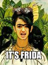

Plantilla:Efemérides - 6 de julio
De:
La Frikipedia
, la enciclopedia
extremadamente
seria.

1885
- Louis Pasteur vacuna contra la rabia al niño Joseph Meister por morder a 3 personas.
1907
- Nace Frida Kahlo, mejor conocida por aparecer en los billetes de 500
Pesos
en
México
y por pintar en sus tiempo libres.
1957
- En Liverpool,
Paul McCartney
y
John Lennon
se conocen en la feria de Woolton Village en la montaña rusa.
1971
- Muere Louis Armstrong, el primer trompetista de
jazz
estadounidense
en pisar la
luna
.
1980
- Nace el jugador de
baloncesto
español
Paul Gasol, su
padre
afirma que fue una anotación.
1997
- En
Bolivia
son encontrados, en una fosa común, los restos del guerrillero
argentino
-
cubano
Ernesto Che Guevara
.
Autor(es):
Gñapero Solitario
Frikipedia 2005-2016, Licencia
GFDL 1.2
- Extraído por FrikiLeaks
 De: La Frikipedia, la enciclopedia extremadamente seria. De: La Frikipedia, la enciclopedia extremadamente seria.
De: La Frikipedia, la enciclopedia extremadamente seria. De: La Frikipedia, la enciclopedia extremadamente seria.